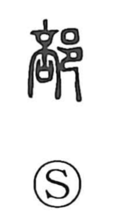

部

Kun: be | On: bu
section ・ department ・ division ・ part ・ classification
Explanation
A phono-semantic compound: the right-hand 邑 points to settlements—villages and towns—while the phonetic element evokes the idea of splitting. Shirakawa takes 音 to depict a ripened fruit on the verge of bursting, and notes how the same phonetic appears in 剖, where it combines with the knife radical 刂 to mean cutting into two. In early glosses such as the Yu Pian it is simply “to divide.” From the sense of apportioning a settlement into parts, the character came to mean a divided district, one of several parts of a whole, and by extension a section or classification.